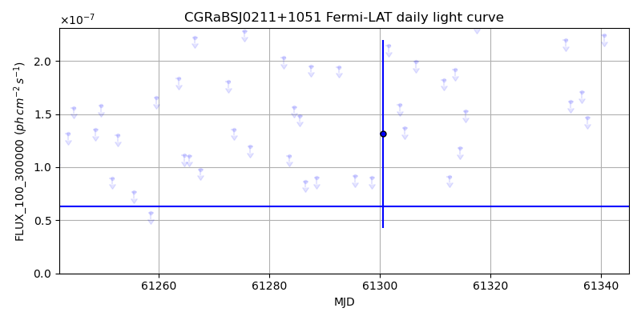
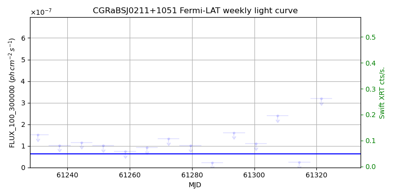
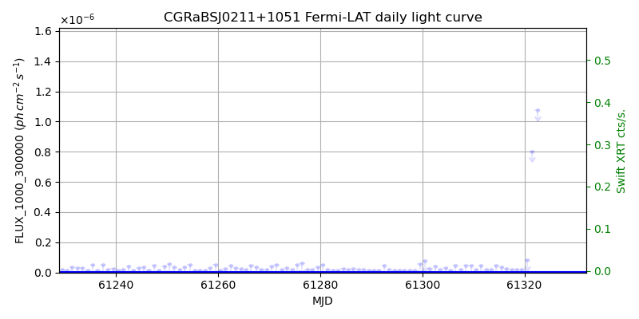
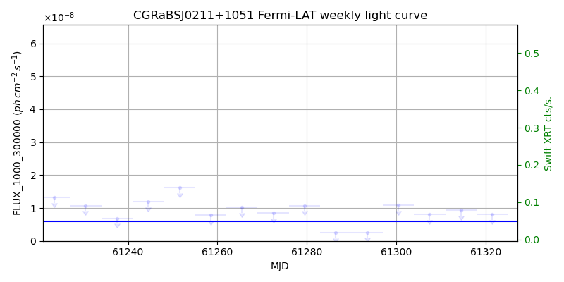

LAT Lightcurve site: https://fermi.gsfc.nasa.gov/ssc/data/access/lat/msl_lc/source/CGRaBS_J0211p1051
NED: Query
Time of last update of this page: UT: 2026-10-30 15:12 (MJD: 61343.633)
| Property | Value |
|---|---|
| R.A. | 2:11:13.20 |
| Dec. | 10:51:36.0 |
| z | 0.200 |
| 3FGL SpectrumType | LogParabola |
| 3FGL PL Index | |
| 3FGL Flux_100_300000 | 6.33e-08 1 / (s cm2) |
| 3FGL Flux_1000_300000 | 5.93e-09 1 / (s cm2) |
| 3FGL Flux >200 GeV | 4.84e-12 1 / (s cm2) |
| 3FGL Extrap. Crab >200 GeV | 0.02 |
| 3FGL Flux After EBL Absorption >200GeV | 2.53e-12 1 / (s cm2) |
| 3FGL EBL Crab Fraction >200GeV | 0.01 |

| MJD | dMJD | Flux | dFlux | Frac3FGL | FracCrab>200GeV | EBLFracCrab>200GeV |
|---|---|---|---|---|---|---|
| 61338.50 | 0.50 | 6.18e-07 | 0.00e+00 | 0.00 | 0.00 | 0.00 |
| 61339.50 | 0.50 | 3.02e-07 | 0.00e+00 | 0.00 | 0.00 | 0.00 |
| 61340.50 | 0.50 | 2.24e-07 | 0.00e+00 | 0.00 | 0.00 | 0.00 |
| 61341.50 | 0.50 | 5.82e-07 | 0.00e+00 | 0.00 | 0.00 | 0.00 |
| 61342.50 | 0.50 | 4.25e-07 | 0.00e+00 | 0.00 | 0.00 | 0.00 |

| MJD | dMJD | Flux | dFlux | Frac3FGL | FracCrab>200GeV | EBLFracCrab>200GeV |
|---|---|---|---|---|---|---|
| 61307.50 | 3.50 | 2.40e-07 | 0.00e+00 | 0.00 | 0.00 | 0.00 |
| 61314.50 | 3.50 | 2.41e-08 | 0.00e+00 | 0.00 | 0.00 | 0.00 |
| 61321.50 | 3.50 | 3.19e-07 | 0.00e+00 | 0.00 | 0.00 | 0.00 |
| 61328.50 | 3.50 | 8.60e-07 | 0.00e+00 | 0.00 | 0.00 | 0.00 |
| 61335.50 | 3.50 | 1.82e-07 | 0.00e+00 | 0.00 | 0.00 | 0.00 |

| MJD | dMJD | Flux | dFlux | Frac3FGL | FracCrab>200GeV | EBLFracCrab>200GeV |
|---|---|---|---|---|---|---|
| 61338.50 | 0.50 | 2.80e-08 | 0.00e+00 | 0.00 | 0.00 | 0.00 |
| 61339.50 | 0.50 | 3.41e-08 | 0.00e+00 | 0.00 | 0.00 | 0.00 |
| 61340.50 | 0.50 | 7.38e-08 | 0.00e+00 | 0.00 | 0.00 | 0.00 |
| 61341.50 | 0.50 | 2.09e-08 | 0.00e+00 | 0.00 | 0.00 | 0.00 |
| 61342.50 | 0.50 | 1.51e-08 | 0.00e+00 | 0.00 | 0.00 | 0.00 |

| MJD | dMJD | Flux | dFlux | Frac3FGL | FracCrab>200GeV | EBLFracCrab>200GeV |
|---|---|---|---|---|---|---|
| 61307.50 | 3.50 | 8.02e-09 | 0.00e+00 | 0.00 | 0.00 | 0.00 |
| 61314.50 | 3.50 | 9.33e-09 | 0.00e+00 | 0.00 | 0.00 | 0.00 |
| 61321.50 | 3.50 | 7.98e-09 | 0.00e+00 | 0.00 | 0.00 | 0.00 |
| 61328.50 | 3.50 | 1.49e-07 | 0.00e+00 | 0.00 | 0.00 | 0.00 |
| 61335.50 | 3.50 | 9.38e-09 | 0.00e+00 | 0.00 | 0.00 | 0.00 |
--------------------------------------------------------- Using user-supplied coords: 2:11:13.20 10:51:36.0 2000 --------------------------------------------------------- FLWO UT night of: 2026-10-31 Local Sid. @ Midnight: 02:14 Sunset (-15.0) (local, UT): 18:44 01:44 Sunrise (-15.0) (local, UT): 05:31 12:31 Moonrise (local, UT): 21:49 04:49 Moonset (local, UT): Moon phase: 0.68 --------------------------------------------------------- AzTime LSID UT Obj_el Obj_az Mn_el Mn_az Sep. --------------------------------------------------------- 18:44 20:57 01:44 15.3 86.3 -27.0 28.6 70.2 19:14 21:27 02:14 21.7 90.2 -23.9 34.8 70.6 19:44 21:57 02:44 28.1 94.3 -20.2 40.4 71.0 20:14 22:27 03:14 34.4 98.7 -16.1 45.6 71.3 20:44 22:58 03:44 40.7 103.6 -11.6 50.4 71.7 21:14 23:28 04:14 46.8 109.3 -6.7 54.8 72.0 21:44 23:58 04:44 52.7 116.2 -0.9 58.8 72.4 22:14 00:28 05:14 58.3 124.9 3.8 62.5 72.7 22:44 00:58 05:44 63.1 136.2 9.2 66.0 73.0 23:14 01:28 06:14 66.9 151.3 14.8 69.3 73.3 23:44 01:58 06:44 69.1 170.3 20.6 72.5 73.6 00:14 02:28 07:14 69.0 191.0 26.5 75.5 73.9 00:44 02:58 07:44 66.7 209.7 32.5 78.6 74.1 01:14 03:28 08:14 62.9 224.6 38.5 81.7 74.4 01:44 03:58 08:44 57.9 235.7 44.7 84.9 74.6 02:14 04:28 09:14 52.4 244.3 50.8 88.3 74.8 02:44 04:59 09:44 46.5 251.1 57.0 92.2 75.0 03:14 05:29 10:14 40.3 256.7 63.2 97.0 75.2 03:44 05:59 10:44 34.0 261.6 69.3 103.5 75.4 04:14 06:29 11:14 27.7 266.0 75.2 113.7 75.6 04:44 06:59 11:44 21.3 270.0 80.4 133.8 75.8 05:14 07:29 12:14 14.9 273.9 83.0 177.6 76.0 05:31 07:46 12:31 11.3 276.1 82.2 206.9 76.1 --------------------------------------------------------- Dark hours >55 deg.: 0.00